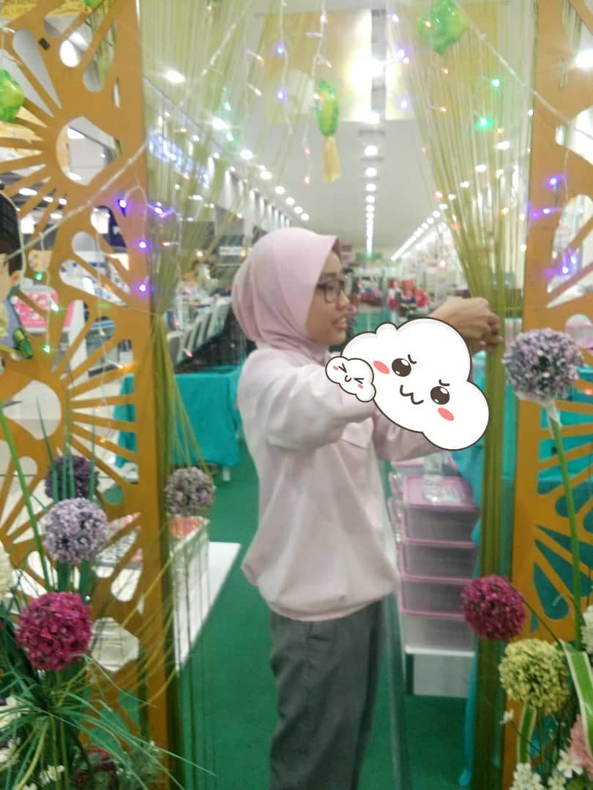
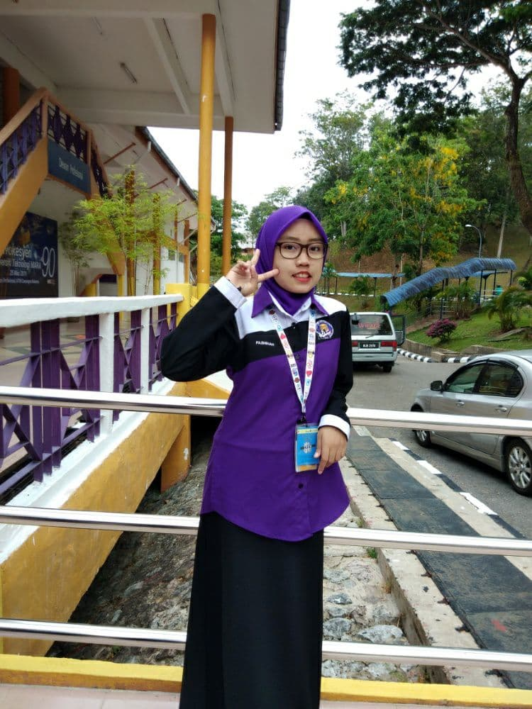

EXPERIENCE
Before I waited for my diploma admission, my parents suggested that I take a part-time job. I also agree with the proposal because it can increase my income for the future. There are some experiences as an employee that I have experienced.Below are the work experiences I have had:
In the picture on the side, this is while I was working as a sales staff under the Hardline Department. I have been through how to order stock until the removal of damaged stock. I have also been through how I want to promote goods and it can be said that my department head likes the way I promote goods because my way can increase profits every time sales are held.
Although I am a sales staff, my department head also told his staff to master the skills of cashiers, especially young staff. This is because when the weekends, public holidays, sale days and other holidays arrive, visitors will increase either from within or outside the country. To avoid over-payment at the counter, staff who are given cashier skills training will help by opening the department counter.
When I went to university, I was also active in the club. The club I joined was the High Achievers' Club and can be said to be a very active program club. The positions I hold in the club are EXCO Programs and Activities as well as assistant head of Technical EXCO. Not only that, I also often volunteer to be a committee member for programs organized by UiTM or other clubs.
